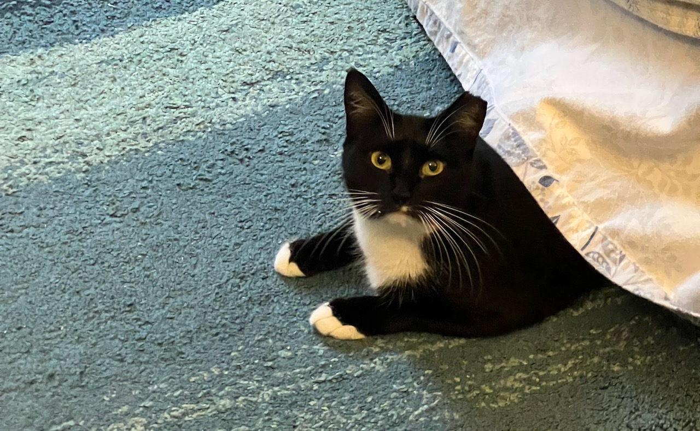

Elliot Milco
My Work
Over the past decade, my work has largely been in the medical software space. At Butterfly Network I've planned, led, and contributed to a multitude of projects related to enterprise account management, clinical workflows, authentication and authorization, ecommerce integrations, and more.
I also did a stint at Fabric Health, where I helped launch a provider directory and scheduling system, led backend team meetings, and did technical planning and implementation for a variety of features, including a system for ingesting, merging, and overriding customer data according to customer-specific precedence rules.
My very first engineering job was as the third developer on a pre-seed startup building an HR software platform. On that team I implemented a lot of the infrastructure and wrote all of the deployment scripts. I also built a system for collecting and displaying anonymized survey-based metrics for HR teams, as well as a group chat feature.
Things I care about, as an Engineer
I believe in clear and open communication among stakeholers. I think a blame-free culture is key to team success, and that we all work best when we approach our work in a spirit of humble, collaborative curiosity.
I think abstractions are good when they are useful and easy to use, but that excessive DRYness can lead to brittle and unmaintainable code. I am very process-oriented but am also a process pragmatist. I dislike clever code, I prefer to "Choose Boring Technology", and I think readability is on par with performance as a concern developers should keep in mind when we work.
One of the things I'm really proud of is the way my work has contributed in measurable ways to help other people. At Butterfly I was privileged to assist in a project that deployed 1000 ultrasound devices to midwives in sub-saharan Africa, for use in improving gestational care and improving outcomes for at-risk pregnancies. While it's not something I particularly looked for or expected in my career as an engineer, it's been a privilege to be able to do good technical work and know that it's also serving humanitarian ends.